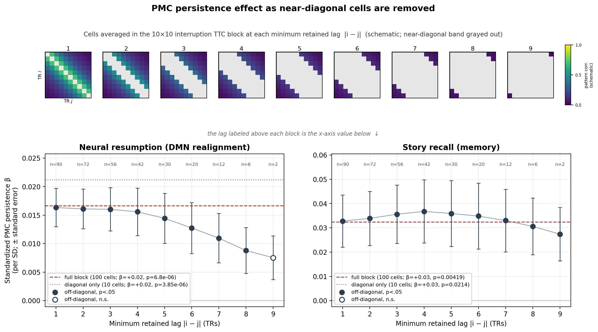
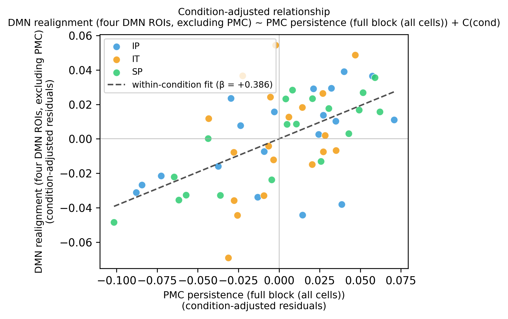
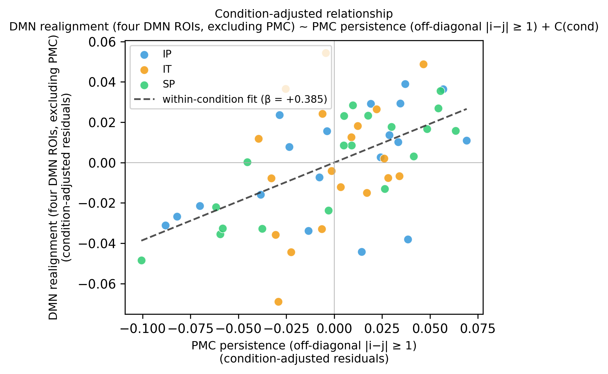
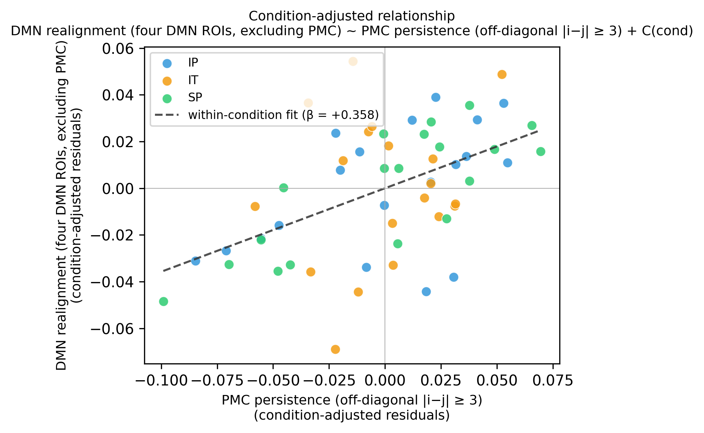
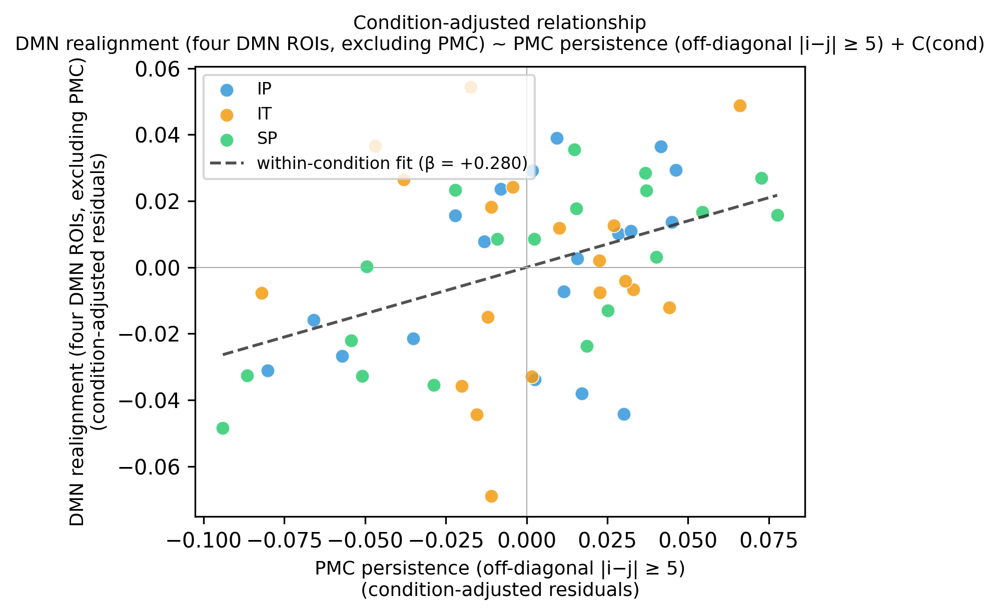
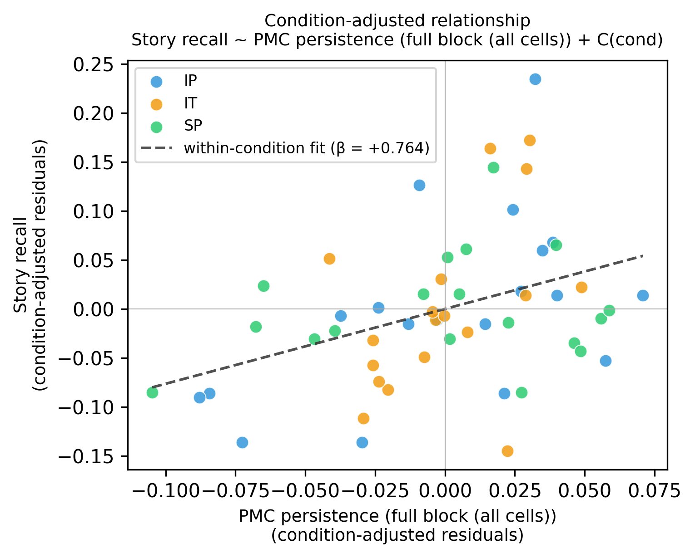
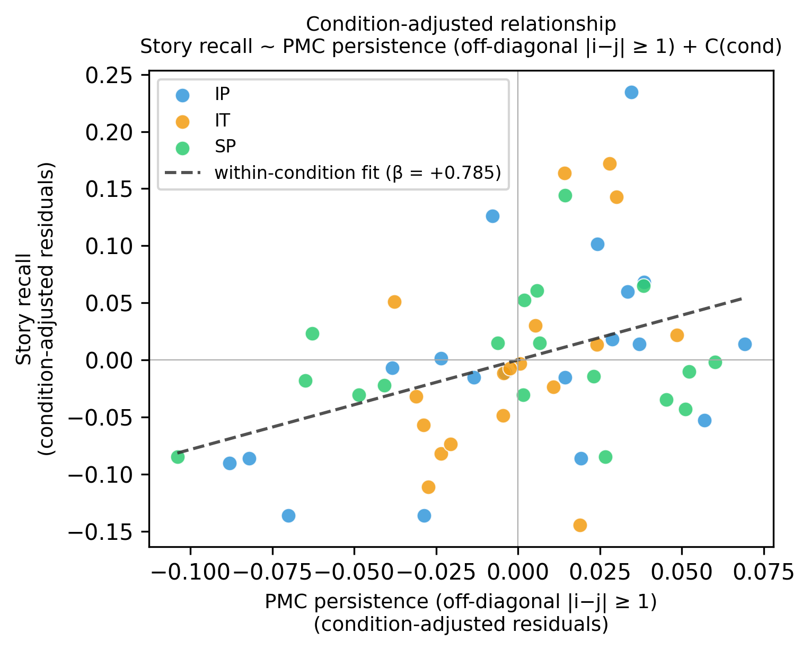
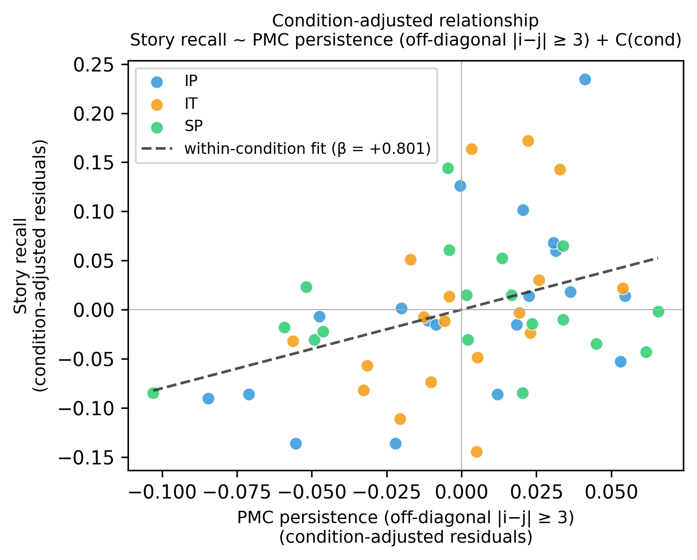
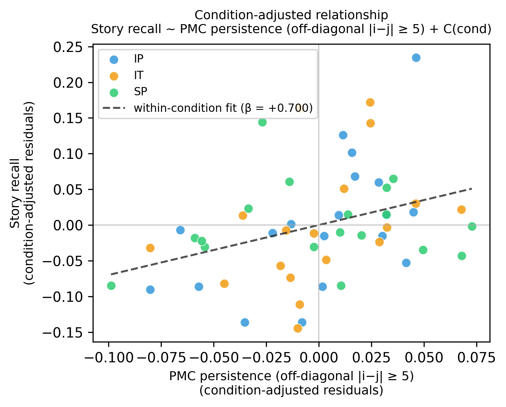

Result 4 measures posterior-medial-cortex (PMC) pattern persistence as the mean of the post-onset × post-onset block of the inter-subject Time×Time Correlation matrix (a 10×10 block over the ten interruption-window TRs; each cell is the correlation between a participant's PMC pattern at interruption TR i and the other participants' averaged pattern at TR j). The block's diagonal (|i−j| = 0) is the same-TR inter-subject correlation — momentary pattern reliability; its off-diagonals (|i−j| ≥ 1) are the correlation of the shared pattern across time — genuine temporal persistence of a latent structure that is only visible across participants. Averaging the whole block mixes the two. Here we test whether the Result 4 effect is true across-time persistence by removing the near-diagonal cells: we keep only cells with |i−j| ≥ L and sweep the minimum retained lag L from 1 (all off-diagonal cells) to 9 (the extreme corners), rerunning the exact Result 4 models. If the effect is genuine persistence it should survive as the band is pushed outward; if it is only momentary reliability it should collapse toward the diagonal-only value.
Everything is identical to Result 4 (Result4_1_persistence-resumption-recall.py) — the PMC region of interest, the skip-five use-ten interruption window, the per-voxel whole-run z-scoring, the pooled ordinary-least-squares models with condition as a categorical fixed effect and one observation per participant, and the same resumption (default-mode-network realignment) and recall outcomes — except that the persistence predictor is the mean of a chosen subset of the 10×10 block rather than the full block. For each variant the predictor is z-scored within the fitted sample, so the reported β is the standardized within-condition slope (per standard deviation of persistence) and is comparable across variants.

The top row is a schematic of the 10×10 interruption Time×Time Correlation (TTC) block at each minimum retained lag: the grayed near-diagonal band (|i−j| < lag) is excluded and only the colored off-diagonal cells are averaged into that lag's persistence value (block number matches the x-axis below). Standardized PMC persistence β (± standard error) for each outcome as the minimum retained lag |i−j| increases (filled markers p < .05; open markers not significant). The n above each point is the number of block cells averaged at that lag (out of 100). The dashed red line is the full-block estimate (Result 4); the dotted gray line is the diagonal-only (reliability) estimate.
| Outcome | Variant | cells | β (std) | SE | t | p | n |
|---|---|---|---|---|---|---|---|
| Neural resumption (DMN realignment) | Full block (all cells) | 100 | +0.017 | 0.003 | 4.99 | 6.80e-06 | 57 |
| Neural resumption (DMN realignment) | Diagonal only (|i−j| = 0) | 10 | +0.021 | 0.004 | 5.15 | 3.85e-06 | 57 |
| Neural resumption (DMN realignment) | Off-diagonal |i−j| ≥ 1 | 90 | +0.016 | 0.003 | 4.87 | 1.04e-05 | 57 |
| Neural resumption (DMN realignment) | Off-diagonal |i−j| ≥ 2 | 72 | +0.016 | 0.003 | 4.61 | 2.58e-05 | 57 |
| Neural resumption (DMN realignment) | Off-diagonal |i−j| ≥ 3 | 56 | +0.016 | 0.004 | 4.23 | 9.33e-05 | 57 |
| Neural resumption (DMN realignment) | Off-diagonal |i−j| ≥ 4 | 42 | +0.016 | 0.004 | 3.75 | 4.43e-04 | 57 |
| Neural resumption (DMN realignment) | Off-diagonal |i−j| ≥ 5 | 30 | +0.014 | 0.004 | 3.30 | 0.0018 | 57 |
| Neural resumption (DMN realignment) | Off-diagonal |i−j| ≥ 6 | 20 | +0.013 | 0.004 | 2.85 | 0.0061 | 57 |
| Neural resumption (DMN realignment) | Off-diagonal |i−j| ≥ 7 | 12 | +0.011 | 0.004 | 2.53 | 0.0143 | 57 |
| Neural resumption (DMN realignment) | Off-diagonal |i−j| ≥ 8 | 6 | +0.009 | 0.004 | 2.19 | 0.0331 | 57 |
| Neural resumption (DMN realignment) | Off-diagonal |i−j| ≥ 9 | 2 | +0.008 | 0.004 | 1.96 | 0.0556 | 57 |
| Story recall (memory) | Full block (all cells) | 100 | +0.032 | 0.011 | 3.00 | 0.0042 | 55 |
| Story recall (memory) | Diagonal only (|i−j| = 0) | 10 | +0.032 | 0.014 | 2.37 | 0.0214 | 55 |
| Story recall (memory) | Off-diagonal |i−j| ≥ 1 | 90 | +0.033 | 0.011 | 3.04 | 0.0037 | 55 |
| Story recall (memory) | Off-diagonal |i−j| ≥ 2 | 72 | +0.034 | 0.011 | 3.04 | 0.0037 | 55 |
| Story recall (memory) | Off-diagonal |i−j| ≥ 3 | 56 | +0.036 | 0.012 | 2.97 | 0.0045 | 55 |
| Story recall (memory) | Off-diagonal |i−j| ≥ 4 | 42 | +0.037 | 0.013 | 2.83 | 0.0067 | 55 |
| Story recall (memory) | Off-diagonal |i−j| ≥ 5 | 30 | +0.036 | 0.014 | 2.65 | 0.0108 | 55 |
| Story recall (memory) | Off-diagonal |i−j| ≥ 6 | 20 | +0.035 | 0.014 | 2.56 | 0.0133 | 55 |
| Story recall (memory) | Off-diagonal |i−j| ≥ 7 | 12 | +0.033 | 0.013 | 2.55 | 0.0137 | 55 |
| Story recall (memory) | Off-diagonal |i−j| ≥ 8 | 6 | +0.031 | 0.012 | 2.62 | 0.0116 | 55 |
| Story recall (memory) | Off-diagonal |i−j| ≥ 9 | 2 | +0.027 | 0.011 | 2.49 | 0.0162 | 55 |
Each panel residualises both axes against the condition fixed effect (value minus its within-condition mean); the dashed line's slope is the within-condition β. Marker colors label conditions (IP blue, SP green, IT orange).







